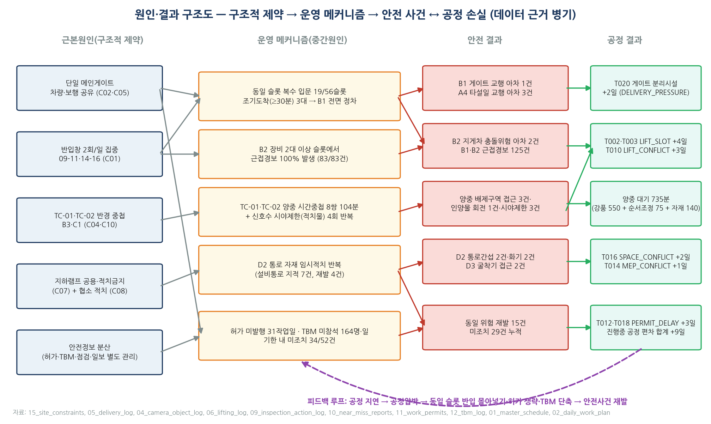
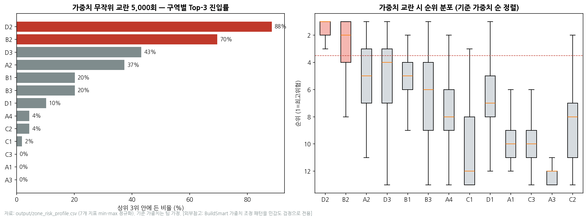
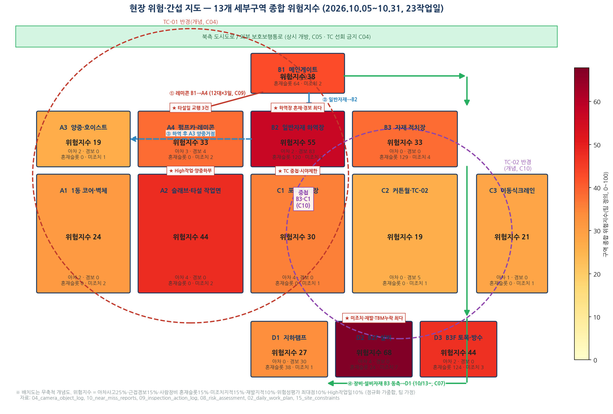
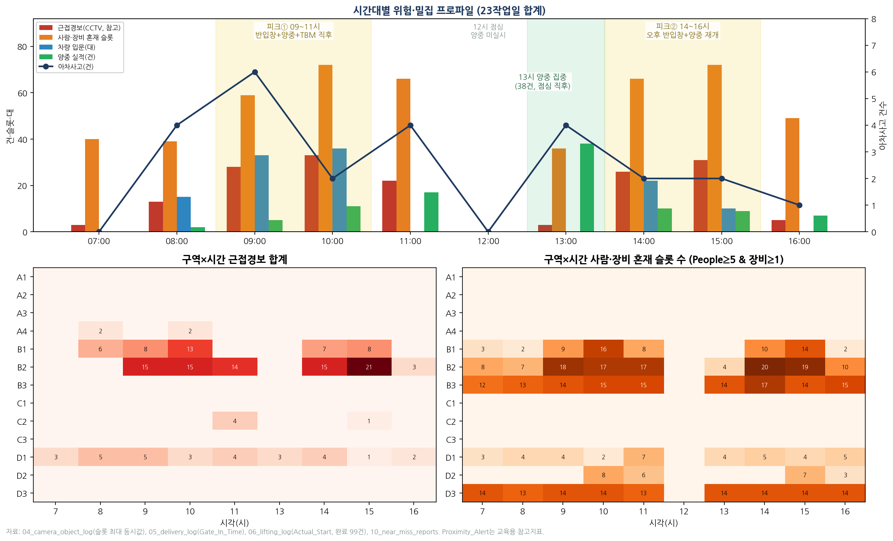
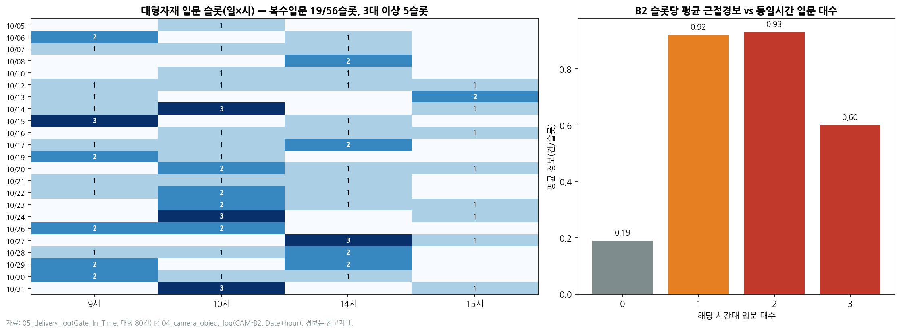
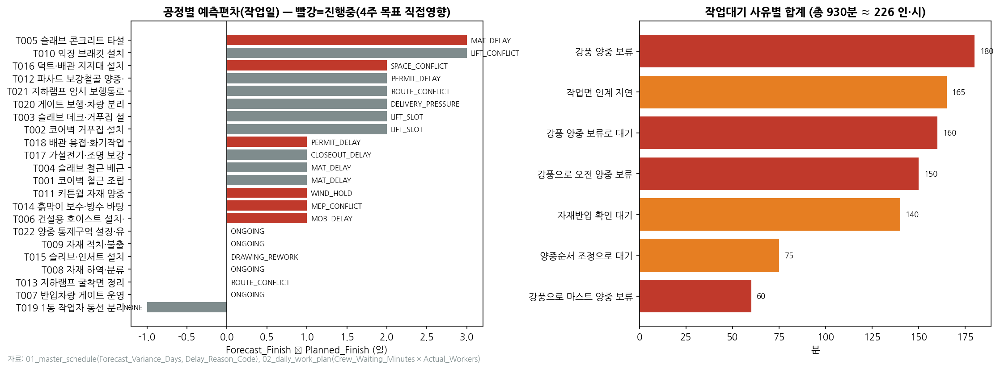
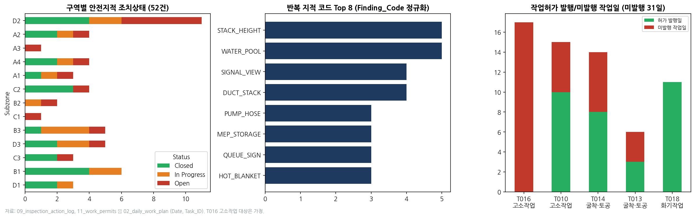
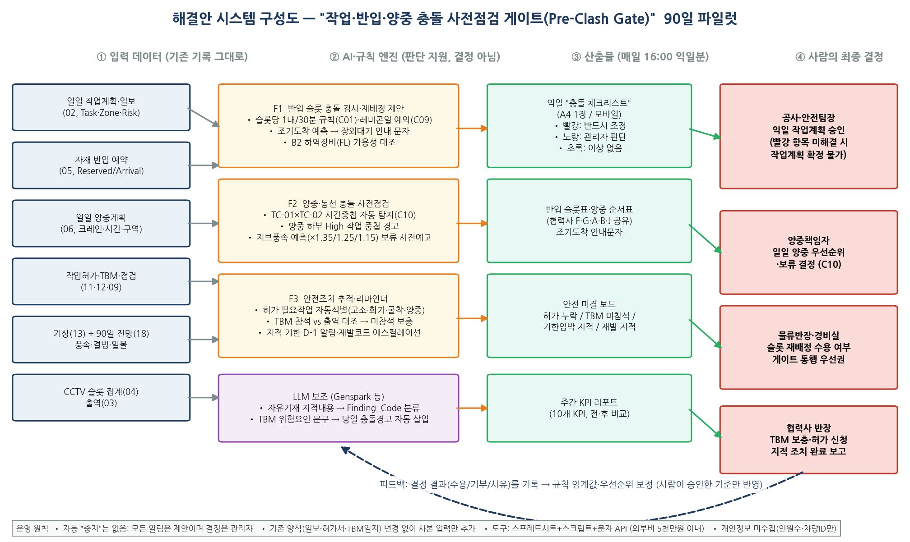

세 질문(① 사고 날 뻔한 곳 ② 사람·장비가 몰리는 곳 ③ 지적이 고쳐지지 않는 곳)의 답이 겹치는 곳을 묶었습니다. R1~R7은 10월 실측, R8은 90일 전망 기반(10월 미발생)으로 성격을 구분합니다.
| # | 위험요인 | 현장에서 벌어지는 일 | 데이터가 보여주는 사실 | 공정 연결 |
|---|---|---|---|---|
| R1 뿌리 | B2 하역장 사람·장비 혼재 09~11·14~16시 | 반입창이 열리면 트럭이 몰려 같은 1시간에 2~3대가 들어옴. 첫 트럭 짐이 바닥에 있는데 다음 트럭이 후진하고, 지게차 2대가 교차하며, 결속 푸는 인부가 그 사이를 걸음 | 근접경보 83건(최다), 그중 100%가 장비≥2대 슬롯. 동시 입문 0대→1대 시 슬롯당 경보 0.19→0.92(5배). 아차 NM-0005·0006(후진 사각·결속 중 접근) | 자재반입 확인 대기 140분, FL 대기 185분/일 |
| R2 | B1 게이트 교행·조기도착 정차 반입창 시작 전후 | 출입구가 하나라 일찍 온 트럭이 도로변에 서고, 작업자가 그 옆을 지나 출근. 타설일엔 레미콘 사이로 일반트럭이 끼어 게이트 앞 3대 | 경보 42건, 조기도착 평균 10.8분(30분↑ 3대), 민원 3건(ENV-001·005·009), QUEUE_SIGN 지적 3회, 아차 NM-0004 | T020 분리시설 +2일 (DELIVERY_PRESSURE) |
| R3 뿌리 | TC-01·TC-02 반경중첩 동시선회 B3·C1, 13~14시 | 두 크레인이 양중계획을 따로 짬. 오전 강풍으로 멈추면 점심 직후 몰아서 들어올리며 동시에 돔. 중첩구역 적치물이 신호수 시야를 가림 | 동시가동 10일 중 5일 시간중첩 8쌍 104분. 양중 99건 중 13시대 38%. 시야제한 아차 3건+지적 SIGNAL_VIEW 4회. TC 가동률 52~54%(최하위) | +7일 (T002·T003 LIFT_SLOT, T010 LIFT_CONFLICT), 양중순서 대기 75분 |
| R4 | A4 레미콘 타설일 교행 08~09시, 10/19·23·28 | 12대가 13분 간격으로 들어오는 사이 호스 정리 인부가 대기선을 벗어나고 아웃트리거 옆을 통행. 통제선 간격 지적이 타설 사이에 조치되지 않음 | 아차 3회 타설 모두 1건씩(NM-0001~3). 간격 12~15분 이탈 5·8·2회. PUMP_HOSE 지적 3회(재발 2) | T005 +3일 (MAT_DELAY), 90일간 매주 타설 반복 |
| R5 | D2 지하 통로 자재적치·화기 종일 | 좁은 지하에 자재 둘 곳이 없어(C07·C08) 작업통로에 쌓임. 그 통로로 고소작업대가 다니고 옆에서 용접 불티. 2~3개 공정이 같은 통로를 씀 | 지적 11건·미조치 7·재발 4 (모두 최다), 아차 4건 전부 미완료, TBM 미참석 36명·일(최다), 대형자재 34%가 D2행. 위험지수 68점 1위 | +3일 (T016 SPACE_CONFLICT, T014 MEP_CONFLICT) |
| R6 | 강풍 보류 → 익일 집중 10/15·21·27 | 지브풍속 12m/s 초과로 양중이 멈추면 자재 기다리던 팀이 하루 대기. 다음 날 밀린 양중을 몰아서 하며 R3를 키움 | 보류 13건 전부 풍속. 작업대기 930분 중 강풍 550분(59%)≈115인·시. 익일 양중 9~10건(평균 4.7의 2배) | T011 +1일 (WIND_HOLD), 90일간 주 1~2일 강풍 예상 |
| R7 뿌리 | 허가·TBM·조치 절차 형식화 D2·A4·C2 중심 | 고소작업대 쓰는 설비팀이 17일 내내 허가 없이 작업. TBM에 빠진 인원이 위험 구역에 몰림. 지적은 쉬운 것만 2~3시간에 처리하고 나머지는 2주 방치, 닫힌 지적이 며칠 뒤 다시 올라옴 | 허가 미발행 31작업일(T016 0/17, T010 10/15, T014 8/14, T013 3/6). TBM 미참석 164명·일/110회. 기한 내 미조치 34/52(65%), 미완료 평균 경과 349h. 재발 15건 | +3일 (T012·T018 PERMIT_DELAY). 모든 위험의 재발 허용 |
| R8 전망 | 동절기 전환 W51(12/14)~ 7주 연속 영하 | 10월엔 최저 10°C로 영하 0시간. 그러나 12월 2주부터 결빙·적설이 시작되고, 타설 후 보온양생에 열풍기·갈탄, 지하에 난방기구가 들어옴. 일몰이 17:15까지 당겨져 마지막 1시간 조도 저하 | 18 전망: 결빙 31/76작업일(41%), 적설 10일, W04 최저 −7°C. 16 Season_Risk: "한중콘크리트 보온양생(열풍기·갈탄 질식·화재)", "지하 난방기구·화기 화재, 환기 부족". 위험성평가(08)에 관련 항목 0건 | R3·R4·R5·R6 악화. 결빙+강풍 중지일 증가 |
상세(정의·원인·근거 산식 7단 서술)는 별도 `risk_factors.md`. R8은 가상 전망값(18)에 근거하므로 "발생한 위험"이 아닌 대비 대상으로 표기하고, 파일럿 중 실측 기온으로 대체합니다.

그림 3. 원인·결과 구조도 — 구조적 제약 → 운영 메커니즘 → 안전 사건 ↔ 공정 손실. 보라색 점선은 "지연 → 공정압박 → 절차 생략 → 재발" 피드백 루프
같은 곳에 동시에 몰리는 문제. R2(게이트)가 B2로 밀려 들어오고 R4(레미콘)와 게이트를 공유. 시간을 나누면 풀림.
두 크레인 계획이 따로 노는 문제. R6(강풍)이 익일 양중을 몰아 R3를 키우고, R1 하역 지연이 양중 순서를 흔듦. 계획을 합치면 풀림.
기록이 흩어져 빠진 걸 못 보는 문제. R5(D2)·R4(A4)의 재발이 여기서 나옴. R8의 새 화기원(열풍기·난방기구)도 같은 허가 체계를 거쳐야 함. 기록을 이으면 풀림.
| 선정기준 [가정 가중치] | 빈도 .3 | 심각도 .3 | 공정연계 .2 | 90일 실현성 .2 |
|---|---|---|---|---|
| 빈도=아차·경보·혼재 건수 / 심각도=RA 초기점수·재발 / 공정연계=Delay_Reason 일수 / 실현성=기존 데이터만으로 규칙화 가능 여부 | ||||
| 순위 | 우선 해결과제 | 포함 위험 | 근거 |
|---|---|---|---|
| P1 | B구역 반입 슬롯·하역장 혼재 해소 | R1 + R2 + R4 | 경보 125건(76%), 아차 6건, 민원 3건. 05·04 데이터로 즉시 규칙화 |
| P2 | 양중 충돌 사전점검 (TC 중첩·풍속·하부작업) | R3 + R6 | 공정지연 8일 직접연계. 06·13·18로 사전탐지 가능 |
| P3 | 안전조치 추적 통합 (허가·TBM·지적, D2 우선) | R7 + R5 + R8 | 미조치 65%·재발 15·허가 0% 공정. 기존 기록 연결만으로 해결, 동절기 화기 확대 대비 |

그림 10. 위험지수 가중치를 5,000회 무작위(Dirichlet) 교란 — D2 88%·B2 70%가 Top-3 유지, 3위 이하 구역은 최대 43%. 7개 지표 중 어느 하나를 제거해도 D2·B2 잔류 → P1(B구역)·P3(D2) 선정은 가정 가중치에 의존하지 않음 [외부참고: BuildSmart 가중치 조정 패턴을 민감도 검정으로 전용]

그림 1. 13개 세부구역 종합 위험지수(0~100). 색이 진할수록 위험. 빨간 점선 TC-01·보라 점선 TC-02 반경은 C04·C10 텍스트 기반 개념 표시(무축척). 화살표 ①~④는 레미콘·일반자재·하역 후 양중·장비 D1 동선
| 순위 | 구역 | 지수 | 아차 | 경보 | 혼재 | 미조치 | 재발 | 성격 |
|---|---|---|---|---|---|---|---|---|
| 1 | D2 지하설비 | 68 | 4 | 0 | 24 | 7 | 4 | 느린 위험 — 쌓이고 방치 |
| 2 | B2 하역장 | 55 | 2 | 83 | 120 | 2 | 0 | 빠른 위험 — 순간 충돌 |
| 3 | A2 슬래브 | 44 | 4 | 0 | 0 | 2 | 0 | 양중 하부·High 11일 |
| 4 | D3 토목방수 | 44 | 2 | 0 | 124 | 3 | 2 | 굴착기·물고임 |
| 5 | B1 게이트 | 38 | 1 | 42 | 64 | 2 | 1 | 교행·민원 |
| 6~7 | B3 / A4 | 33 | 0 / 3 | 0 / 4 | 129 / 0 | 4 / 2 | 0 / 2 | 적치 / 타설일만 |
| 8~13 | C1·D1·A1·C3·A3·C2 | 19~30 | C1 아차 4(TC 중첩·시야), D1은 10/13 동선 전환 후 경보 30→0 | |||||

그림 2. 상단: 23작업일 합계 시간대 프로파일(막대 = 경보·혼재·입문·양중, 선 = 아차사고). 하단: 구역×시간 히트맵(좌 근접경보, 우 사람·장비 혼재 슬롯)
반입창 시작 + 양중 개시 + TBM 직후 이동. 경보 61건(37%), 아차 8건, 입문 48대(60%). 10시 경보 33건 최다.
12~13시 양중 금지 직후 38건(38%)이 13시대에 몰림. TC 시간중첩 8쌍 대부분이 13~14시대. 아차 4건.
오후 반입창 + 양중 재개. 경보 57건(35%), 15시 혼재 72슬롯. 요일별로는 월요일 경보 38·아차 6으로 최다(주초 자재 집중).

그림 8. 좌: 대형자재 80대 입문 슬롯(일×시) — 2대 이상 19슬롯, 3대 5슬롯(10/14·15·24·27·31). 우: B2 슬롯당 평균 경보 vs 동시 입문 대수 — 0대 0.19 → 1대 0.92 → 2대 0.93
| 장비 | 가동일 | 가동률 | 대기/일 | 주요 대기 사유 |
|---|---|---|---|---|
| TC-01 | 23 | 54% | 76분 | 강풍 300분×3일, 점검 후 재가동 |
| TC-02 | 17 | 52% | 91분 | 강풍, 자재순서 조정 |
| MC-01 | 11 | 45% | 93분 | 양중 계획 없음 5일 |
| FL-01~03 | 23 | 74~79% | 58~67분 | 작업면 인계 대기 21, 자재순서 20 |
| SL/EX/HST | 6~20 | 77~82% | 43~60분 | 정상 범위 |

그림 7. 좌: 공정별 예측편차(빨강 = 진행중, 4주 목표에 직접 영향). 우: 작업대기 930분의 사유별 분해
| 지연사유 코드 | 일수 | 공정 | 연결 위험 |
|---|---|---|---|
| MAT_DELAY | 5 | T001·T004·T005 | R1·R4 |
| LIFT_SLOT | 4 | T002·T003 | R3 |
| LIFT_CONFLICT / PERMIT_DELAY | 3 / 3 | T010 / T012·T018 | R3 / R7 |
| SPACE·MEP·ROUTE_CONFLICT | 2+1+2 | T016·T014·T013·T021 | R5 |
| DELIVERY_PRESSURE / WIND_HOLD / MOB·CLOSEOUT | 2 / 1 / 2 | T020 / T011 / T006·T017 | R2 / R6 / — |
| 합계 | 24 (진행중 9) | 간섭·슬롯·허가·반입 관련 17일 = 71% | |
4주 목표 위협 — 진행중 6개 공정 편차 합계 +9일: T005 타설 +3, T016 지지대 +2, T006·T011·T014·T018 각 +1. 이 중 T005·T016은 R4·R5 핫스팟 공정.
작업대기 930분 ≈ 226인·시: 강풍 550(59%) / 작업면 인계지연 165 / 자재반입 확인 140 / 양중순서 조정 75. 강풍 외 380분(81인·시)은 R1·R3 조율로 제거 가능한 대기.
※ Delay_Reason_Code는 공정당 1개만 기록되어 복합 원인(예: 강풍+슬롯) 분리 불가 → §9 추가 데이터

그림 9. 좌: 구역별 지적 조치상태(52건). 중: Finding_Code 정규화 후 반복 지적 Top 8. 우: 공정·유형별 허가 발행일 vs 미발행 작업일(T016 고소작업 대상은 [가정])
Closed 23 / Open 15 / In Progress 14. 기한 내 미조치 34(65%). 완료 중앙값 2.7h vs 미완료 평균 경과 349h — "쉬운 것만 처리" 패턴. 재발 15건: SIGNAL_VIEW 4·PUMP_HOSE 2·MEP_STORAGE 2·HOT_BLANKET 2·OUTRIGGER 2·WATER_POOL 2
중량물 양중 41건 100% 연결, 허가시간 외 0건 ✓. 화기 T018 11/11일 ✓. 고소 T016 0/17·T010 10/15, 굴착 T014 8/14·T013 3/6 → 미발행 31일. 크레인 기사가 요구하는 양중만 되고, 요구자가 없는 유형은 빠짐
참석률 94.7%로 평균은 양호하나 미참석 164명·일이 D2 36·C2 25·B1 19에 집중 — 위험 구역일수록 빠짐. 참석>실투입 이상치 0건(기록 정합)

그림 4. 시스템 구성도 — ① 입력(기존 기록 사본) → ② 규칙·AI 엔진(F1·F2·F3 + LLM 보조) → ③ 산출물(익일 체크리스트·슬롯표·미결 보드·주간 KPI) → ④ 사람의 최종 결정. 점선은 결정 결과를 임계값 보정에 되먹이는 피드백
| 15:30 | 협력사 반장·물류·양중팀이 기존 양식 그대로 익일 작업계획·반입예약·양중계획을 공유 시트에 입력(사본). 새 양식 없음 |
|---|---|
| 16:00 | 엔진 실행 — F1·F2·F3 규칙 검사 + 기상 예보 반영. 소요 수 분(스크립트) |
| 16:30 | 충돌 체크리스트 A4 1장 생성. 🔴 빨강 = 반드시 조정(TC 시간중첩, 허가 없는 고소·화기, 슬롯 2대 이상) / 🟡 노랑 = 관리자 판단(양중 하부 High 작업, 풍속 예보 경계, TBM 미참석 예상) / 🟢 초록 = 이상 없음 |
| 17:00 | 공사·안전팀장 검토. 빨강 항목이 남아 있으면 익일 계획 확정 불가 → 물류반장·양중책임자와 조정 → 승인. 승인·거부·사유를 기록 |
| 익일 07:00 | TBM에 체크리스트의 해당 구역 항목이 특별지시 문구로 삽입(LLM 초안 → 안전팀 검수). 조기도착 예상 차량엔 전날 저녁 장외대기 안내 문자 |
| 주 1회 | 10개 KPI 자동 집계 리포트 → 임계값·우선순위 보정은 사람이 승인한 것만 반영 |
| F1 반입 슬롯 충돌검사·재배정 | F2 양중·동선 충돌 사전점검 | F3 안전조치 추적 리마인더 | |
|---|---|---|---|
| 해결 대상 | R1·R2·R4 (P1) | R3·R6 + R8 풍속·결빙 (P2) | R7·R5 + R8 화기 확대 (P3) |
| 입력 데이터 | 05 반입예약(Reserved·Arrival 이력), 07 FL 가동, 06 양중계획, 레미콘 타설일 | 06 일일 양중계획(크레인·시간·구역), 02 작업계획(Subzone·Risk_Level), 13 기상 + 18 전망 | 11 허가, 12 TBM, 03 출역, 09 점검(Due·Status·Recurrence), 02 작업계획 |
| 규칙·AI의 역할 | • 슬롯당 1대/30분 규칙(C01 창 내) [가정 운영규칙], 레미콘일 예외(C09) • 같은 슬롯 2대 이상 → 대안 슬롯 제안(하역장비 가용 시간 대조) • 협력사별 조기도착 패턴 학습 → D-1 장외대기 안내 문자 자동 발송 • B3 적치 포화 시(C08) 입문 간격 확대 제안 | • TC-01×TC-02 Actual/계획 시간 교집합 자동 탐지 → 빨강 • 양중 Target 하부 구역에 High 작업 → 노랑 • 지상풍속 예보 × 보정계수(1.35/1.25/1.15) → 지브풍속 12/10 초과 예상 시 사전 보류·시간 이동 제안 • 보류 익일 양중 몰림 방지: 시간대별 상한(예: 13시대 크레인당 3건) [가정] | • 작업계획의 장비·공종으로 허가대상 자동식별(고소작업대·용접·굴착기·크레인, 동절기 열풍기·난방기구 추가) → 허가 없으면 빨강 • 출역(03) vs TBM 참석 대조 → 미참석 명단, 보충 TBM 알림 • 지적 Due D-1 알림, 재발코드 2회째 → 안전팀장 에스컬레이션 • LLM: 자유기재 지적 → Finding_Code 분류, 체크리스트 → TBM 특별지시 초안 |
| 산출·알림 | 익일 반입 슬롯표(협력사 F·A·B·G·J 공유), 조기도착 안내 문자 | 양중 순서표(크레인별 시간 분리), 풍속 보류 예고 | 안전 미결 보드(허가누락 / 미참석 / 기한임박 / 재발) |
| 사람이 결정 | 물류반장: 재배정 수용·거부 / 경비실: 게이트 통행 우선권 | 양중책임자: 우선순위·보류 최종 결정(C10 규정 그대로) | 협력사 반장: 허가 신청·보충 TBM / 안전팀장: 에스컬레이션 처리 |
| 기존 업무 연계 | 반입대장(05) 양식 유지, 예약 시트에 열 1개(확정 슬롯) 추가 | 일일 양중계획서 양식 유지, 승인란에 "충돌검사 통과" 체크 추가 | 허가서·TBM일지·점검대장 양식 유지, 사본 입력만 |
| 한계 | 택배·소형차량 미포함(05 범위). 협력사 수용성. 조기도착 학습은 23일 표본으로 초기 정확도 낮음 | 반경은 구역 단위 근사(지브 길이·선회 방향 미제공 → "후보"). 풍속 예보 정확도 의존. 충돌방지장치는 90일 이후 옵션 | 자유기재 분류 오류 가능 → 반드시 검수. 허가대상 매핑은 현장 규정 확인 필요(T016 가정) |